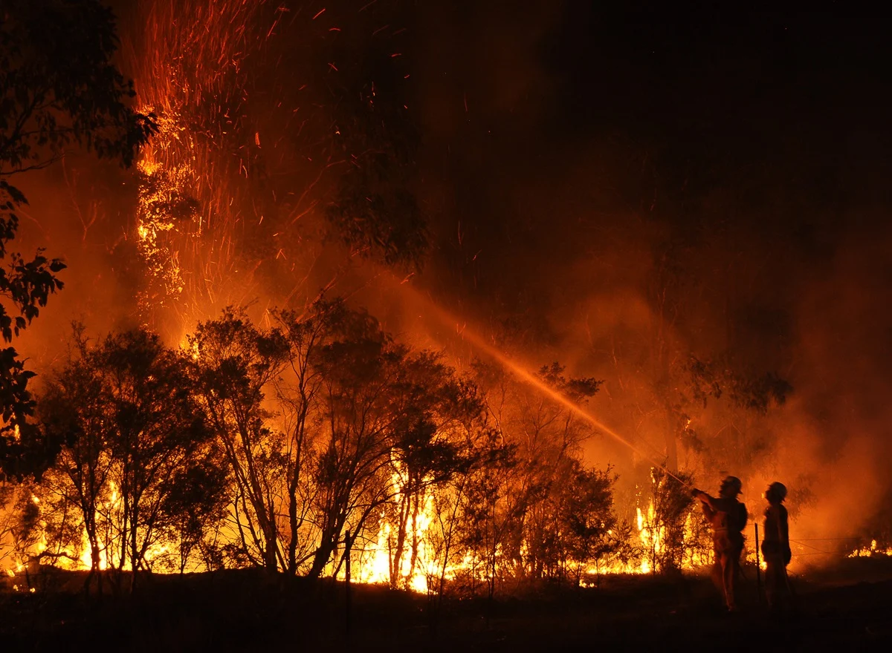
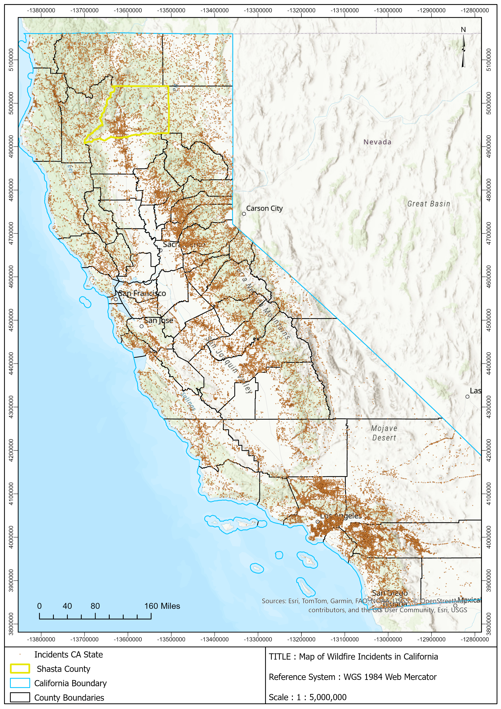

Shasta County (CA) Wildfire Risk Assessment
Mapped residential buildings in Shasta County's Wildland-Urban Interface to quantify wildfire exposure — identifying 16,746 at-risk buildings and roughly $7.54B in potential economic exposure.
▸ Read the sample case study
This project used GIS to spatially map residential buildings in Shasta County, California falling within the Wildland-Urban Interface (WUI): the zone where human development meets wildland vegetation — to provide a spatial evidence base for fire risk management and land-use planning.

Wildfire incidents across California — Shasta County highlighted (1:5,000,000, WGS 1984 Web Mercator).
Methodology
- Clipped wildfire incidents, building footprints and land cover to the Shasta County boundary.
- Extracted forest regions (deciduous, evergreen, mixed) from the land cover layer.
- Created a 100m buffer around forested areas to define the WUI zone.
- Selected residential buildings within the buffer and costed exposure at $450,000 per building.

Fire Risk Assessment Map — buildings within the 100m WUI zone against forest cover and wildfire incidents.
Results
16,746 residential buildings sit within the WUI. At an estimated $450,000 average property value, total potential economic exposure is approximately $7.54 billion — concentrated along forest edges in the northern and western county.
Key outcomes
- Identified 16,746 buildings within the 100m WUI zone.
- Quantified ~$7.54B in potential economic loss exposure.
- Mapped spatial clustering of at-risk buildings along forest edges.